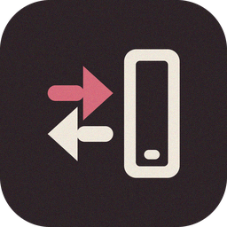

Get the zip from Releases and unzip it anywhere.

パスpassPC ⇄ phone over home Wi-Fi. Full quality. No app on the phone, no cloud.
Get the zip from Releases and unzip it anywhere.
Allows Pass on Private Wi-Fi only and adds it to right-click Send to.
Windows may warn: More info → Run anyway.
or click to pick, or right-click → Send to.
with the phone camera, tap Download.
iPhone: Files › Downloads → Share → Save. Android: Downloads.
and scan the QR with the phone.
photos, videos or files, tap Upload.
Downloads › From Phone. Nothing is overwritten.
Ports open only while sharing.Close Pass, press Stop, or leave it idle 20 min: they close.